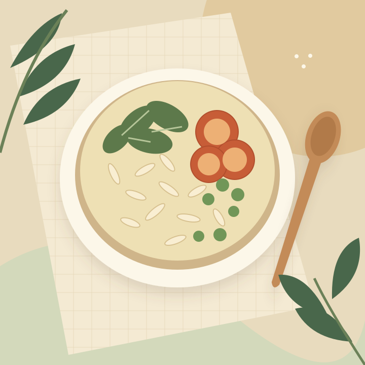

Who’s behind it
[Add the organizing group’s name, responsible team, and verified organization details.]
CARE BEGINS WITH A MEAL
A midday meal. A moment of care. The Shared Table is a concept for a midday-meal initiative supporting [children or communities served] in [location].
A shared purpose. Many ways to be part of it.

Room for care.
Room for everyone.
THE PURPOSE WE SHARE
The purpose is simple: support access to nutritious midday meals.
Here is where the program’s verified details will be shared.
[Add the organizing group’s name, responsible team, and verified organization details.]
[Describe the children or communities served and the program’s location without identifying individuals.]
[Explain verified meal preparation, food handling, and distribution arrangements.]
GIVE IN A WAY THAT WORKS FOR YOU
Choose a one-time contribution or explore monthly giving. Every decision should begin with clear information about where your support goes.
See how funds will be reportedUSD is an example currency. The payment provider and donation policies have not been supplied. Amounts below are examples. No money can be collected in this preview.
CLARITY, FROM INGREDIENT TO DELIVERY
No estimates presented as facts.
Costs will be published with their source and reporting period.
[Add verified cost, what it includes, and the period it covers.]
AWAITING VERIFIED DATASource: [cost report or public record]
Reporting period: [start date–end date]
| Expense | Amount | Share |
|---|---|---|
| Food & ingredients | USD [amount] | [verified %] |
| Meal preparation | USD [amount] | [verified %] |
| Transport & distribution | USD [amount] | [verified %] |
| Administration | USD [amount] | [verified %] |
[Add reconciled expense totals, allocation methods, reporting dates, and the source report.] No allocation percentages have been assumed.
ACCOUNTABILITY IS PART OF THE WORK
Reporting period: [start date–end date]
Last verified: [date] · Source: [report]
[Verified meal total]
[Verified total and counting method]
[Verified number and location list]
THE NEXT SHARED GOAL
[Add the verified purpose, target amount, currency, and target date.]
Raised: [verified amount]Goal: [target amount]
Progress is unavailable until verified amounts are supplied. The line above does not represent a percentage raised.
Explore contribution options →THE PEOPLE. THE PROCESS. THE EVERYDAY.
Stories shared with permission.
People represented with dignity.
Space for a consent-approved photograph
PROGRAM UPDATE · [DATE]
[Add a verified update about how meals are prepared, with permission for any quoted words or photographs.]
Awaiting an approved updateSpace for a consent-approved photograph
COMMUNITY STORY · [DATE]
[Add a respectful, consent-approved community story. Exclude identifying details about children and sensitive personal information.]
Awaiting an approved storySpace for a consent-approved photograph
VOLUNTEER NOTE · [DATE]
[Add an approved volunteer update describing the work, with verified dates and permission from anyone featured.]
Awaiting an approved updateTHERE’S A PLACE FOR YOU HERE
Volunteering, business sponsorship, or a simple question — start a conversation about how you’d like to take part.
[Add verified volunteer opportunities, participation requirements, and sponsorship terms.]
OPEN INFORMATION. INFORMED CHOICES.
Program records and donation terms will be linked here
when the organizing team supplies them.
[Add published reports with reporting periods and accessible download links.]
NO REPORTS SUPPLIED[Add organizer’s legal name, address, responsible contact, and any verified registration details.]
DETAILS NOT YET VERIFIED[Add refund, cancellation, receipt, fee, and restricted-fund policies.] No tax benefits are claimed.
A FEW HELPFUL ANSWERS
Not yet. This is a website preview. [Confirm the program currency and verified payment provider.] The contribution form lets you review an example selection but cannot collect money.
Monthly giving is a proposed option, not an active subscription. [Add the billing schedule, cancellation method, customer portal, and policy before enabling recurring donations.] No recurring payment is created here.
[Add the receipt issuer, delivery method, expected timing, and support contact.] When payments are connected, a verified payment confirmation and receipt process must be provided. Tax benefits have not been established or claimed.
[Add the record-keeping method, reporting periods, responsible reviewers, and source reports.] Figures shown as placeholders are not reported results.
Use the enquiry preview to explore the form. [Add the approved application process, volunteer requirements, sponsorship options, and a working contact method.] Entries are not sent yet.
No beneficiary photographs or personal stories have been supplied for this preview. Only approved material with documented permission should be added. Children’s identifying details and sensitive personal information are excluded.
[Add the verified refund policy, recurring donation cancellation steps, applicable timing, and support contact.] Payment and recurring donation features are not active.
A SHARED TABLE STARTS WITH A CONVERSATION